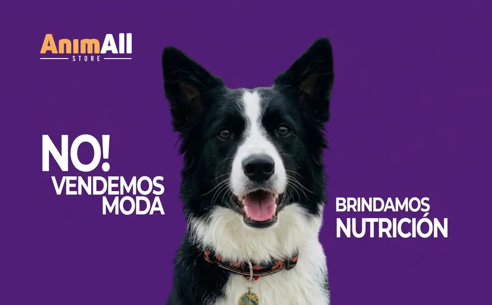
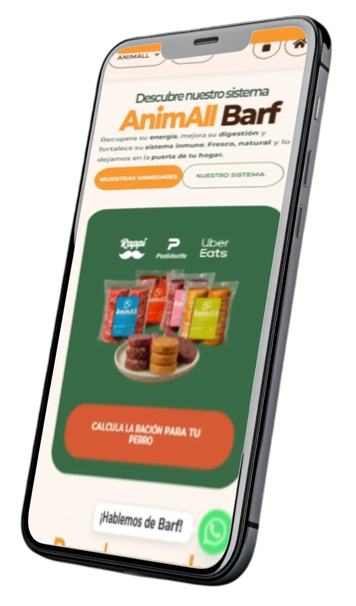

Casos de Estudio
Galaxia de
Galaxia de
Proyectos
// 01 . NUTRICIÓN EVOLUTIVA
AnimAll Store
E-commerce de alta conversión dedicado a la alimentación natural BARF. Desarrollamos una arquitectura robusta, un sistema integrado de cálculo de porciones personalizadas y una interfaz con alto impacto visual y coherencia de marca.


// 02 . TRÁNSITO DIGITAL
E-Commerce Sideral
Diseño y arquitectura completa para plataformas de alta conversión. Optimizamos la carga, pulimos la interfaz y creamos experiencias fluidas adaptadas a modelos de negocio exigentes.